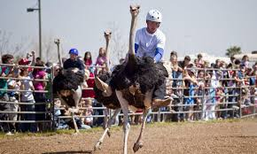
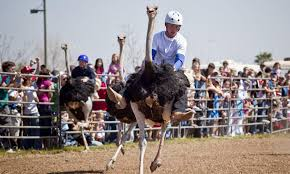

-Carrera de avestruz
-Polo en elefantes
-Chess-boxing
-Ciclobol
Haga click en cada deporte para poder ver de donde es sacada la información:
Carrera de avestruz-----------Polo en elefantes-----------Chess-boxing-----------Ciclobol
 
